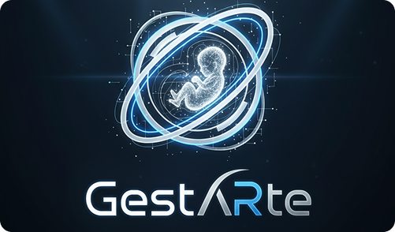

Realidad Virtual para el Estudio de la Gestación
Aplicación educativa inmersiva implementada en Unity para el estudio de procesos de gestación. Meta Quest 3 / Meta Quest Pro.
Unity
C#
Blender
Meta Quest 3
+ ver proyecto